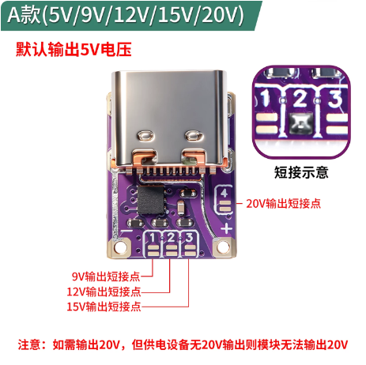
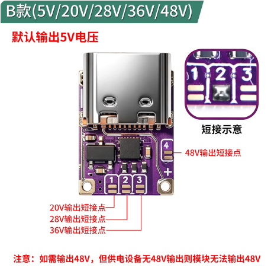

来源 芯路城产品资料页 608。采集时间 2026-11-06T13:07:07+00:00。
以下保存网页详情文字与产品图片，移除了站点导航、登录组件、跟踪和脚本。网站的资料下载栏目在采集时显示暂无内容。
超 mini Type‑C PD 诱骗器，体积小巧，适合安装空间受限场景；支持 PD3.1 / QC2.0 快充协议，通过焊盘短接方式选择输出电压，模块分为 A、B 两个版本，可输出 5‑48V 直流电压，最大支持 5A 电流。
⚠️模块无升降压功能，输出电压完全取决于 PD 充电器能力，充电器不支持对应档位，则无法输出目标高压，会向下兼容输出可用电压。
【2】产品参数
| 项目 | 参数 |
|---|---|
| 产品版本 | A 款、B 款 |
| 输入接口 | Type‑C 母座 |
| 支持协议 | PD2.0、PD3.1 (EPR)、QC2.0 快充协议 |
| 输出电压 | 5V/9V/12V/15V/20V/28V/36V/48V |
| 最大输出电流 | 5A |
| 工作温度 | -40℃ ~ 105℃ |
| 模块尺寸 | 13mm × 10mm × 4mm |
| 输出端子 | +输出正极，‑输出负极 GND |
| 配置方式 | 焊盘短接（烙铁焊锡短接对应焊盘） |
默认状态：全部焊盘不短接，固定输出5V

| 短接焊盘 | 输出电压 |
|---|---|
| 无短接 | 5V |
| 短接 1 | 9V |
| 短接 2 | 12V |
| 短接 3 | 15V |
| 短接 4 | 20V |

| 短接焊盘 | 输出电压 |
|---|---|
| 无短接 | 5V |
| 短接 1 | 20V |
| 短接 2 | 28V |
| 短接 3 | 36V |
| 短接 4 | 48V |
模块没有升降压功能，必须 PD 充电器硬件支持该电压，才能输出对应高压；普通 PD2.0 充电器无法输出 28V/36V/48V，必须 PD3.1 (EPR) 充电器。
输出严禁正负极接反，接反会直接烧毁后端负载。
负载电流不能超过模块 5A 上限，同时不能超过充电器最大输出电流。
高压（28‑48V）输出，做好绝缘处理，防止短路打火。
短接焊盘只短接一组，禁止同时短接多个焊盘，否则模块工作异常。
不可直接给锂电池充电，本模块仅输出固定电压，无充电管理电路。